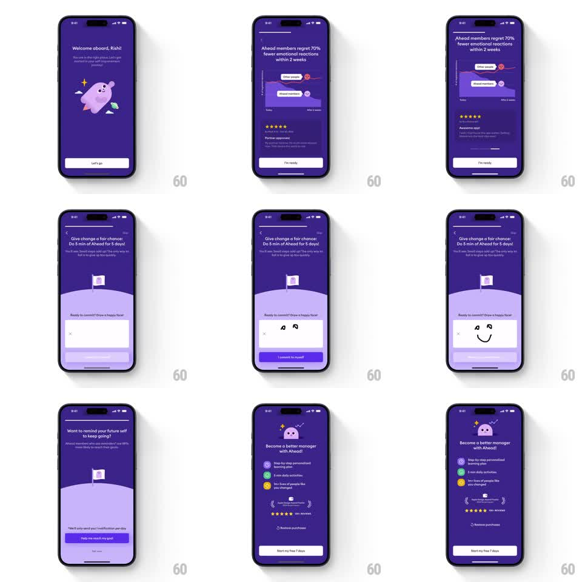

Media
Frame-by-frame

Rebuild this interaction 1:1: Ahead's stats-to-pricing run - a welcome screen, an animated outcome chart ("70% fewer emotional reactions within 2 weeks"), a draw-a-smile commitment canvas, a notification ask, and a purple pricing screen with a free-trial CTA.

Rebuild this interaction 1:1: Ahead's stats-to-pricing run - a welcome screen, an animated outcome chart ("70% fewer emotional reactions within 2 weeks"), a draw-a-smile commitment canvas, a notification ask, and a purple pricing screen with a free-trial CTA.
## Integration
Integration: stack-agnostic spec - springs given as stiffness/damping, timed motions as duration + curve; map every value to your framework and animation library of choice.
## Scene
All screens deep purple with white text. 1: "Welcome aboard, Rishi!" with floating mascot, Let's go button. 2: "Ahead members regret 70% fewer emotional reactions within 2 weeks" over a line chart comparing "Other people" (rising line) and "Ahead members" (falling line), plus a 5-star review card; I'm ready button. 3: "Give change a fair chance: Do 5 min of Ahead for 5 days!" with a flag-on-a-hill illustration and a drawing canvas ("Ready to commit? Draw a happy face!") plus "I commit to myself" button. 4: "Want to remind your future self to keep going?" with a time picker card, "Help me reach my goal" and "Not now". 5: "Become a better manager with Ahead!" - feature checklist with colored icons, award laurels, star rating, "Start my free 7 days" button, Restore purchases.
## Motion spec
Pattern: animated proof chart, draw-to-commit canvas, staggered pricing reveal.
- Pushes slide horizontally (300ms, ease-out) with the top progress bar advancing per step.
- The chart draws on entrance: both lines stroke in left to right (~900ms, ease-in-out), the Ahead line slightly delayed (~200ms), with their end labels popping in as each stroke finishes (scale 0.6 to 1.0 spring, stiffness ~320, damping ~20). The review card fades up after (translateY 12px, 200ms).
- The smile canvas renders freehand strokes as dark rounded ink (width ~6px, 1:1 with touch); a drawn face (two dots + curve) enables the commit button (gray to purple, 150ms) and the flag illustration waves (rotation +-5deg, 400ms).
- The pricing screen staggers: checklist rows slide in one by one (translateY 14px to 0, 180ms, 70ms apart), laurels scale in last, and the CTA rises from the bottom (translateY 100% to 0, 250ms).
## Calibration
- Chart lines must animate together but not identically - the delay between them is what separates "other people" from "Ahead members".
- Each screen has exactly one primary button at the bottom; keep the rhythm identical so the flow feels like one machine.
## Reduced motion
Chart renders final; staggers and canvas celebration become 150ms fades; drawing input stays functional.
## Don't miss
- The commitment canvas asks for a happy face specifically, not a checkmark - detection should accept any drawn content of sufficient length.
- "Not now" on the reminder screen is a quiet text action; the flow continues to pricing either way.